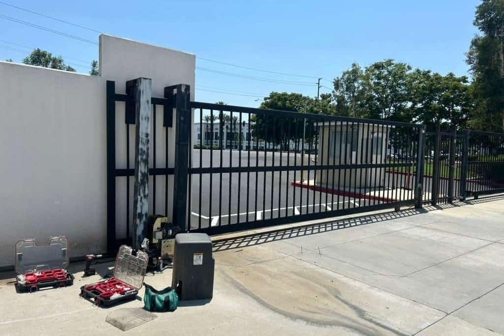
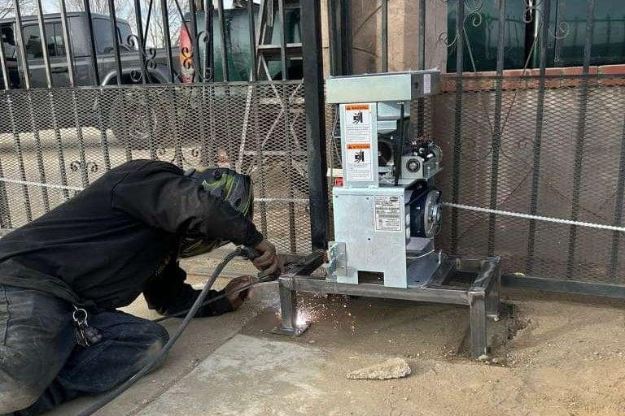

New automatic gate for your home or business? We design, supply, and install complete gate systems across DFW — from a single residential driveway gate to a full commercial entry system.
A new gate installation is more than putting up a gate and hanging a motor — it requires proper site assessment, correct operator sizing, professional electrical work, and careful calibration of every component. Done right, your gate runs reliably for years. Done wrong, you're calling for repairs every few months.
Shield Gate Repair handles the entire installation process: site visit and consultation, gate and operator selection, concrete work for posts, electrical connection, access control setup, and final programming and training. One call, one company, one installation done right.


We come to your property, measure everything, assess power availability, and understand your access needs and security goals.
You receive a detailed written quote covering gate, operator, access control, electrical, and installation labor. No surprises.
We handle everything — concrete, gate hanging, operator mounting, electrical, and access control wiring and programming.
Full cycle testing, safety feature verification, and hands-on demonstration so you know exactly how your new system works.
Tell us what’s wrong and we’ll call you back within 1 hour. Or reach us directly at +1 (214) 735-4314.
Free site assessment and quote for gate installations across all Dallas-Fort Worth cities.
+1 (214) 735-4314